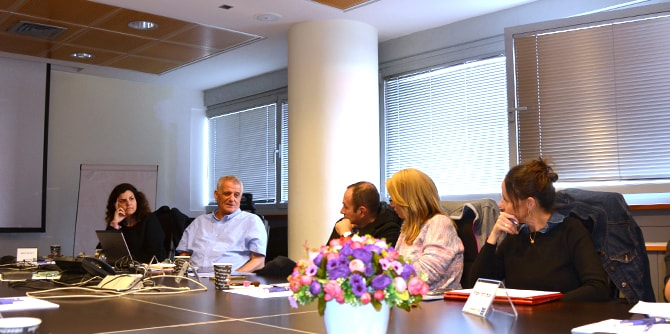

המפגש הקודם של בוגרי מחזור כ"ד עסק בסוגיות של ניהול ומנהיגות ובהבדל ביניהם. המפגש הנוכחי, הרביעי במספר, התקיים ב-8 בינואר ובו התעמקו הבוגרים במהות המנהיגות.
פרופ' דוד דרי, מנהל מרכז מנדל למנהיגות בצפון, פרופ' אמריטוס באוניברסיטה העברית וממייסדי בית הספר למנהיגות ציבורית בה, שיתף את הבוגרים בתפיסתו המקורית הנוגעת למושג המנהיגות. פרופ' דרי ציין כי "מנהיגות היא ביטוי עצמי ולא תוצאות. מעשים ולא תכונה רציפה... מנהיג חייב להיות בראש ובראשונה נאמן לעצמו ולהנהיג את חייו כראוי". לדעת פרופ' דרי, מבחן התוצאה אינו קריטריון לבחינת מנהיגות, שכן יש מעשים ראויים ונכונים שאינם מובילים בהכרח לתוצאה המקווה. "המטרה אינה מקדשת את האמצעים, ומבחן התוצאה מתעלם מן הדרך שלעתים יכולה להיות פסולה גם אם היא מובילה לתוצאה רצויה", אמר.

פרופ' דרי דן במונח מנהיגות מתמירה (או מעצבת): "מעשים של מנהיגות יוצרים דבר חדש המיטיב עם הבריות... מנהיגות שאינה מבקשת לענות על ציפיות קיימות אלא לחנך לציפיות ראויות". הוא הבחין בין ניהול טוב, העוסק בשיפור הקיים, לבין מנהיגות, היוצרת מציאות חדשה. הגדרת המונח "מנהיגות", לפיו, מבחינה גם בין התפקיד שאדם ממלא ומקומו בהיררכיה הארגונית לבין האופן שבו הוא ממלא את תפקידו, פעולותיו ומעשיו – "מנהיגות היא פוטנציאל הגלום בכל אחד ואחת מאתנו לעשות מעשי מנהיגות – להגות, ליצור או לפעול מחוץ לגבולות המוכר והבטוח כדי להיטיב".
דבריו של פרופ' דרי עוררו עניין רב ודיון ער מצד כל המשתתפים. חלקם ביקשו לחלוק על תפיסת המנהיגות שהציג, התווכחו עם ההבחנה הברורה בין ניהול מצוין למנהיגות, וביקשו לשמוע את דעתו על הקשר שבין מנהיגות ליזמות עסקית: האם מנהיגות מתייחסת רק לשינויים חינוכיים-חברתיים? האם מנהליהן של חברות עסקיות ששינו את המציאות שבה אנו חיים כיום יכולים להיחשב מנהיגים?
לאחר הדיון הובילה
רקפת מוסק, מנהלת הייעוצים ביחידת בוגרי מנדל, סבב "איפה אני בעולם": כל אחד מהבוגרים סיפר בקצרה על קורותיו בזמן שחלף מאז כניסתו לתפקיד ושיתף באתגרים המרכזיים שעמם הוא מתמודד.
{kind=link}